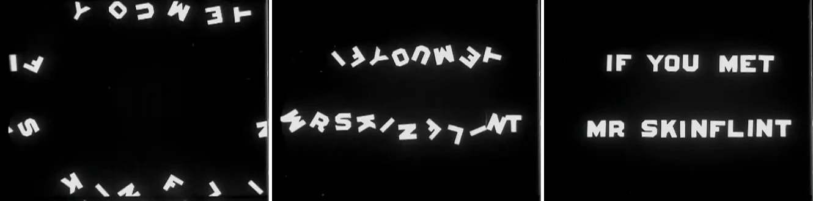
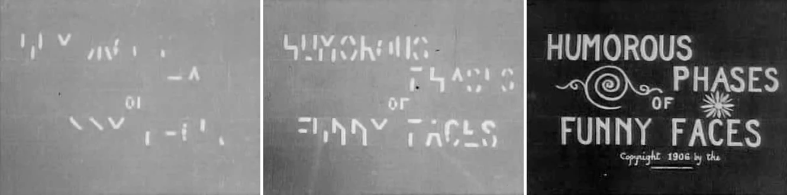
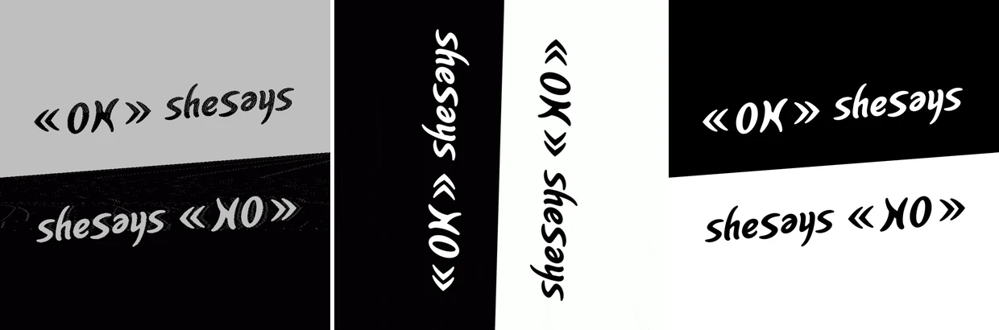
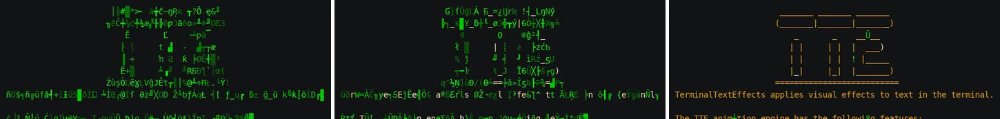

選定理由・よく研究されている
映画史家チャールズ・マッサーは本作を、ポーターが文字を動かして場面間字幕を組み立てた初期の例として取り上げています。
作品・制作の例7件を紹介しています。実作品画像4点、参照・関連画像0点。画像の収集は継続中です。
現代の表現方法・説明用の分類
Kinetic typography
文字が伸びる、走る、止まる。動きによって、言葉の強さや読む速さが変わります。キネティック・タイポグラフィは、時間と動きを使う文字の表現です。
実作品を見る

画像を表示できませんでした。下の出典ページで確認できます。
エドウィン・S・ポーター／エジソン製作会社 / 1905年
映画史家チャールズ・マッサーは本作を、ポーターが文字を動かして場面間字幕を組み立てた初期の例として取り上げています。
Edwin S. Porter / Edison Manufacturing Company. 公開映像の12秒・13.5秒・16秒を左から順に掲載。
出典で作品・資料を見る ↗実作品を見る

画像を表示できませんでした。下の出典ページで確認できます。
J・スチュアート・ブラックトン／ヴァイタグラフ社 / 1906年
米国議会図書館の公開解説は、切り紙を使った冒頭タイトルに触れ、映画本編の線画アニメーションと区別しています。
J. Stuart Blackton / Vitagraph Company of America. 米国議会図書館の映像から、公開ファイルの4秒・9秒・21秒を掲載。
出典で作品・資料を見る ↗実作品を見る

画像を表示できませんでした。下の出典ページで確認できます。
バジル・モラン / 2015年
Wikimedia Commons の品質画像に選ばれた作品で、作者自身が反対の意味を持つ二つの文の組み合わせとして解説しています。
© Basile Morin（CC BY-SA 4.0）。原作の0秒・0.86秒・1.22秒を抜粋し、横に並べて縮小。図版も同ライセンス。
出典で作品・資料を見る ↗実作品を見る

画像を表示できませんでした。下の出典ページで確認できます。
ChrisBuilds / 2023年にプロジェクト初公開
GitHubで4,000以上のスターを集めた端末用アニメーションツールが、暗号解読の演出として公式に用意している作例です。
© 2023 ChrisBuilds（MIT License）。公式アニメーションWebPの2.78秒・12.52秒・18.48秒から、各画面の上部を抜粋。
出典で作品・資料を見る ↗実在する作品・制作物（個別の分野は domain を参照）
都市の名前を、独自の可変書体とプログラムで動かします。
作品・資料の出典を見る ↗原題：Cities in Motion
スタジオ・ドゥンバー／デプト / 制作年未確認 / 駅の画面用モーショングラフィックス
日本語の見出しは読みやすさのための呼び名・説明名です。原題は記録欄に示しています。
画像の転載条件は未確認。出典の公開は転載許諾ではありません。
実在する作品・制作物（個別の分野は domain を参照）
イベント全体の動く文字や形の仕組みです。参加作品全体を同社の制作とはしません。
作品・資料の出典を見る ↗原題：DEMO 2022：イベントの動くデザイン
スタジオ・ドゥンバー／デプト / 2022 / 催事の視覚表現
日本語の見出しは読みやすさのための呼び名・説明名です。原題は記録欄に示しています。
画像の転載条件は未確認。出典の公開は転載許諾ではありません。
実在する作品・制作物（個別の分野は domain を参照）
文字、太さ、色、音の反応を試した共同制作です。
作品・資料の出典を見る ↗原題：Google Sans Flex — Pushing the boundaries of a font
スタジオ・ドゥンバー／デプト、グーグル・デザイン / 制作年未確認 / 書体を使った映像実験
日本語の見出しは読みやすさのための呼び名・説明名です。原題は記録欄に示しています。
画像の転載条件は未確認。出典の公開は転載許諾ではありません。
無声映画の場面間字幕
画面の端で横倒しになっていた文字が、中央に集まって向きをそろえます。最後に初めて「IF YOU MET / MR SKINFLINT」と読めます。
作品・資料の出典を見る ↗原題：How Jones Lost His Roll
エドウィン・S・ポーター／エジソン製作会社 / 1905年 / 無声映画の場面間字幕
無声映画のタイトルアニメーション
タイトルの各文字は、初めから一字ずつ並ぶわけではありません。紙片で作った白い線が文字を少しずつ形づくり、最後に渦巻きと著作権表記が加わります。
作品・資料の出典を見る ↗原題：Humorous Phases of Funny Faces
J・スチュアート・ブラックトン／ヴァイタグラフ社 / 1906年 / 無声映画のタイトルアニメーション
回転する文字のアニメーションGIF
同じ線を半回転させると、賛成の「OK」は拒否の「NO」として読めます。回転の途中は文字の判別が難しく、動きが止まると、もう一方のせりふが浮かびます。
作品・資料の出典を見る ↗原題：Ambigram “OK” she says / She says “NO”
バジル・モラン / 2015年 / 回転する文字のアニメーションGIF
端末用文字アニメーションの公式作例
文字の位置はほとんど動きません。同じ桁に表示する記号を次々と取り替え、最後に正しい英字を止めることで、暗号が解ける時間を表しています。
作品・資料の出典を見る ↗原題：TerminalTextEffects — Decrypt
ChrisBuilds / 2023年にプロジェクト初公開 / 端末用文字アニメーションの公式作例
印刷物のような一枚の配置だけでなく、現れる順番や止まる時間も設計します。文字の位置を動かす方法と、文字そのものの形を変える方法は分けて見られます。
動きながら色が変わると、注目する場所も変わります。
読める時間があるか、文字の形を変えても言葉を追えるか見ます。
位置、回転、大きさ、文字の形のうち何が変わるか分けます。
一場面だけでなく、前後の場面とのつながりを見ます。
可変フォントは文字の形を変えられる技術です。動く文字はそれ以外の方法でもつくれますし、可変フォントを静止したまま使うこともできます。
動きを止める選択肢や、動かなくても意味が伝わる表示を考えることも大切です。
映像や文字のアニメーションを、元の作品と照らして読みます。静止場面では形を、再生するとその形が変わる速さや間隔を確かめられます。
作品・制作の例7件を紹介しています。実作品画像4点、参照・関連画像0点。画像の収集は継続中です。